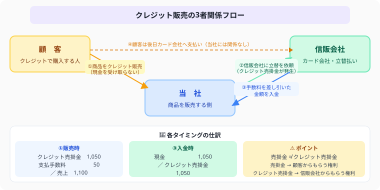

クレジット売掛金の仕訳とは？
手数料2パターン・信販会社との取引を例題3問で完全解説【日商簿記3級】
- クレジット売掛金——信販会社に対する債権。通常の売掛金（顧客への債権）と区別する
- 支払手数料の計上タイミング——「販売時」か「入金時」か問題文に従う（標準は入金時）
- 入金時はクレジット売掛金（資産）を消去して当座預金または現金に換える
- 受取商品券も同様の資産——精算時に現金化する（発行元に請求して受取）
こんにちは、大谷です！
実は、今回紹介する「クレジット売掛金」ですが、僕が初めて仕訳を見たとき、「え、商品を売ったのに手元の現金が全然増えてない……？しかも謎の手数料まで引かれてる……うわっ、なんじゃこりゃ！」と本気で脳内パニックを起こした論点でした（笑）。
落ち着いて考えると、これは会社と顧客の間に「信販会社」というもう1人の登場人物が割り込んでくる、いわば【信販会社とのドラマ】なんです。顧客からは1円も直接もらわず、代わりに信販会社が立て替えて、手数料を天引きした金額を後から振り込んでくれる——この三角関係さえ頭に入れば、あとは機械的に仕訳が組み立てられます。
今回は、このドラマをゲーム感覚で一瞬で解ける裏技を、図解と一緒にお届けします！
また、記事の末尾のほうにある【いいねボタン】をポチッと押してもらえると、めちゃくちゃ嬉しいです！
💳 ① クレジット販売の流れ——当社・顧客・信販会社の3者の関係を把握する

図解を見てください。クレジット販売では当社が直接お金をもらう相手は「顧客」ではなく「信販会社（カード会社）」です。顧客にはカード払いで売るので現金は入りません。その代わり、信販会社が立て替えてくれた金額（手数料を差し引いた額）が後日入金されます。この流れを図で確認してから仕訳の学習に進みましょう。
クレジット販売では3者（当社・顧客・信販会社）が登場します。
顧客は信販会社に後払いしますが、当社は信販会社から（手数料差引後の）代金を受け取ります。この「信販会社に対する債権」がクレジット売掛金です。
📝 ② 販売時の仕訳——クレジット売掛金（資産）が発生する瞬間
売上は販売価格の満額で計上します。クレジット売掛金（信販会社に対する債権）は手数料を差し引いた金額になります。この「売上とクレジット売掛金の金額が違う」ことが最大の落とし穴です。
例）売上10,000円・手数料200円 → 売上 10,000 ／ クレジット売掛金 9,800 ＋ 支払手数料 200
商品10,000円をクレジットカードで販売。信販会社の手数料率は3%（300円）の場合を考えます。
手数料の計上タイミングによって2パターンあります。
パターンA：手数料を販売時に計上する場合——問題文に「販売時に計上」の指示がある場合
クレジット売掛金 ＝ 10,000 − 300（手数料）＝ 9,700円。販売時に手数料も費用計上するパターン。
パターンB：手数料を入金時に計上する場合——指示がないときの標準パターン
販売時は手数料を計上せず、クレジット売掛金を販売価格の全額（10,000円）で計上する。
💰 ③ 入金時の仕訳（手数料を販売時に計上した場合）——クレジット売掛金を消去して現金化する
パターンAの場合、信販会社から9,700円が入金された時の仕訳です。
手数料はすでに販売時に費用計上済みなので、入金時は単純にクレジット売掛金を消去します。
💰 ④ 入金時の仕訳（手数料を入金時に計上する場合）——入金のタイミングで手数料を費用計上する
パターンBの場合、信販会社から9,700円（手数料300円差引後）が入金された時の仕訳です。
クレジット売掛金（10,000円）を消去し、実際の入金額9,700円と手数料300円に分けて計上します。
「クレジット手数料は販売時に計上する」と指示があればパターンA、指示がなければパターンBが一般的です。試験では問題文をよく読んで、どちらのパターンかを判断しましょう。
🔍 ⑤ 通常の売掛金との違い——「誰からもらう権利か」が勘定科目の使い分けのポイント
| 比較項目 | 通常の売掛金 | クレジット売掛金 |
|---|---|---|
| 勘定科目 | 売掛金 | クレジット売掛金 |
| 代金の回収相手 | 顧客（得意先）から直接 | 信販会社から |
| 手数料の負担 | なし | 信販会社への手数料あり（支払手数料） |
| 回収金額 | 売上金額と同額 | 売上金額から手数料を差し引いた金額 |
| 貸倒リスク | 得意先の信用リスクあり | 信販会社が保証（原則リスクなし） |
🎫 ⑥ 商品券（受取商品券）——発行元から現金を受け取る権利（資産）として処理する
他店が発行した商品券を受け取って商品を販売した場合、「受取商品券（資産）」という勘定科目を使います。
| 場面 | 借方 | 貸方 |
|---|---|---|
| 商品券で商品を売る | 受取商品券（資産）↑ | 売上 |
| 商品券を現金に精算 | 現金 | 受取商品券（資産）↓ |
商品券は発行元から現金を受け取る権利（請求権）です。クレジット売掛金と同じ考え方で、「後で現金に換えられる」権利を資産として記録します。
自社発行の商品券を売ったときは「前受金（負債）」です。他社から受け取った商品券が「受取商品券（資産）」です。
以下の取引について仕訳しなさい（手数料は販売時に計上する）。
- ① 商品50,000円をクレジットカードで販売した。信販会社の手数料率は2%である。
- ② 後日、信販会社から①の代金が当座預金に振り込まれた。
ポイント：手数料 ＝ 50,000 × 2% ＝ 1,000円。クレジット売掛金 ＝ 50,000 − 1,000 ＝ 49,000円。
この記事が少しでも参考になったら……
クレジット売掛金は「信販会社とのドラマ」を思い浮かべながら、手数料をどのタイミングで計上するかという1つの分岐さえ見抜ければ、確実な得点源になります。
僕の執筆のモチベーション維持のために、この下にある【いいねボタン】をポチッと押してもらえると、めちゃくちゃ嬉しいです！
よくある質問
クレジット売掛金と通常の売掛金は何が違うの？
クレジット売掛金は代金を「信販会社」から回収する権利です。通常の売掛金は得意先から直接回収しますが、クレジット売掛金は信販会社を経由して受け取ります。また、信販会社への手数料（支払手数料）が発生するため、入金額が売上金額より少なくなる点も大きな違いです。
支払手数料はいつ計上するの？
問題文の指示によって2パターンあります。「クレジット手数料は販売時に計上する」という指示があれば販売時に計上します（パターンA）。指示がない場合は信販会社から入金を受けたとき（入金時）に計上するのが標準です（パターンB）。試験では問題文の指示を必ず確認しましょう。
クレジット売掛金はいつ消えるの？
信販会社から入金を受けたときに消えます。入金時に「（借）現金（または当座預金）／（貸）クレジット売掛金」の仕訳を切ることでクレジット売掛金（資産）が減少して消去されます。手数料を入金時に計上するパターンでは、同時に支払手数料（費用）も計上します。